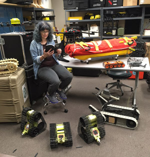

Rebecca F. Kuang is a Marshall Scholar, translator, and award-winning, #1 New York Times bestselling author of the Poppy War trilogy and Babel: An Arcane History, among others. She has an MPhil in Chinese Studies from Cambridge and an MSc in Contemporary Chinese Studies from Oxford; she is now pursuing a PhD in East Asian Languages and Literatures at Yale.
ANDY WEIR built a career as a software engineer until the success of his first published novel, THE MARTIAN, allowed him to live out his dream of writing fulltime. He is a lifelong space nerd and a devoted hobbyist of subjects such as relativistic physics, orbital mechanics, and the history of manned spaceflight. He also mixes a mean cocktail. He lives in California. Andy’s next book, ARTEMIS, is available now.

Martha Wells is an award-winning SF/F author whose work includes The Murderbot Diaries, The Books of the Raksura, and Witch King (2023). She has also written tie-in fiction for Star Wars, Stargate: Atlantis, and Magic: The Gathering. A recipient of Hugo, Nebula, and Locus Awards, her books are international bestsellers published in over thirty languages.